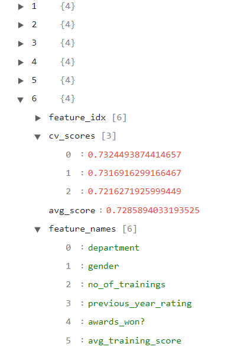

SeqFeatSelection Example
[1]:
import sys
sys.path.append('../../../notebooks')
import pandas as pd
import numpy as np
from raimitigations.dataprocessing import SeqFeatSelection
from download import download_datasets
1 - Dataset with Headers
[2]:
data_dir = '../../../datasets/'
download_datasets(data_dir)
dataset = pd.read_csv(data_dir + 'hr_promotion/train.csv')
dataset.drop(columns=['employee_id'], inplace=True)
dataset
[2]:
| department | region | education | gender | recruitment_channel | no_of_trainings | age | previous_year_rating | length_of_service | KPIs_met >80% | awards_won? | avg_training_score | is_promoted | |
|---|---|---|---|---|---|---|---|---|---|---|---|---|---|
| 0 | Sales & Marketing | region_7 | Master's & above | f | sourcing | 1 | 35 | 5.0 | 8 | 1 | 0 | 49 | 0 |
| 1 | Operations | region_22 | Bachelor's | m | other | 1 | 30 | 5.0 | 4 | 0 | 0 | 60 | 0 |
| 2 | Sales & Marketing | region_19 | Bachelor's | m | sourcing | 1 | 34 | 3.0 | 7 | 0 | 0 | 50 | 0 |
| 3 | Sales & Marketing | region_23 | Bachelor's | m | other | 2 | 39 | 1.0 | 10 | 0 | 0 | 50 | 0 |
| 4 | Technology | region_26 | Bachelor's | m | other | 1 | 45 | 3.0 | 2 | 0 | 0 | 73 | 0 |
| ... | ... | ... | ... | ... | ... | ... | ... | ... | ... | ... | ... | ... | ... |
| 54803 | Technology | region_14 | Bachelor's | m | sourcing | 1 | 48 | 3.0 | 17 | 0 | 0 | 78 | 0 |
| 54804 | Operations | region_27 | Master's & above | f | other | 1 | 37 | 2.0 | 6 | 0 | 0 | 56 | 0 |
| 54805 | Analytics | region_1 | Bachelor's | m | other | 1 | 27 | 5.0 | 3 | 1 | 0 | 79 | 0 |
| 54806 | Sales & Marketing | region_9 | NaN | m | sourcing | 1 | 29 | 1.0 | 2 | 0 | 0 | 45 | 0 |
| 54807 | HR | region_22 | Bachelor's | m | other | 1 | 27 | 1.0 | 5 | 0 | 0 | 49 | 0 |
54808 rows × 13 columns
This class implements the sequential feature selection method. It represents a wrapper of the SequentialFeatureSelector class from the mlxtend library, offering certain simplifications and abstractions.
We can call this subclass using the default parameters and passing the dataframe only when calling the .fit() method. We can choose to pass the whole dataset along the label column using the “df=” and “label_col=” parameters.
[3]:
feat_sel = SeqFeatSelection(n_jobs=4)
feat_sel.fit(df=dataset, label_col='is_promoted')
feat_sel.get_selected_features()
No columns specified for imputation. These columns have been automatically identified:
['education', 'previous_year_rating']
No columns specified for encoding. These columns have been automatically identfied as the following:
['department', 'region', 'education', 'gender', 'recruitment_channel']
[Parallel(n_jobs=4)]: Using backend LokyBackend with 4 concurrent workers.
[Parallel(n_jobs=4)]: Done 12 out of 12 | elapsed: 0.8s remaining: 0.0s
[Parallel(n_jobs=4)]: Done 12 out of 12 | elapsed: 0.8s finished
[2022-07-27 10:46:16] Features: 1/12 -- score: 0.6895577479869736[Parallel(n_jobs=4)]: Using backend LokyBackend with 4 concurrent workers.
[Parallel(n_jobs=4)]: Done 11 out of 11 | elapsed: 0.1s finished
[2022-07-27 10:46:16] Features: 2/12 -- score: 0.7872499546962967[Parallel(n_jobs=4)]: Using backend LokyBackend with 4 concurrent workers.
[Parallel(n_jobs=4)]: Done 10 out of 10 | elapsed: 0.2s finished
[2022-07-27 10:46:16] Features: 3/12 -- score: 0.8804506473945294[Parallel(n_jobs=4)]: Using backend LokyBackend with 4 concurrent workers.
[Parallel(n_jobs=4)]: Done 7 out of 9 | elapsed: 0.2s remaining: 0.1s
[Parallel(n_jobs=4)]: Done 9 out of 9 | elapsed: 0.2s finished
[2022-07-27 10:46:17] Features: 4/12 -- score: 0.8807940412342802[Parallel(n_jobs=4)]: Using backend LokyBackend with 4 concurrent workers.
[Parallel(n_jobs=4)]: Done 6 out of 8 | elapsed: 0.2s remaining: 0.1s
[Parallel(n_jobs=4)]: Done 8 out of 8 | elapsed: 0.2s finished
[2022-07-27 10:46:17] Features: 5/12 -- score: 0.8691371715375045[Parallel(n_jobs=4)]: Using backend LokyBackend with 4 concurrent workers.
[Parallel(n_jobs=4)]: Done 4 out of 7 | elapsed: 0.1s remaining: 0.1s
[Parallel(n_jobs=4)]: Done 7 out of 7 | elapsed: 0.2s finished
[2022-07-27 10:46:17] Features: 6/12 -- score: 0.8522627614734568[Parallel(n_jobs=4)]: Using backend LokyBackend with 4 concurrent workers.
[Parallel(n_jobs=4)]: Done 3 out of 6 | elapsed: 0.1s remaining: 0.1s
[Parallel(n_jobs=4)]: Done 6 out of 6 | elapsed: 0.2s finished
[2022-07-27 10:46:17] Features: 7/12 -- score: 0.826864693465736[Parallel(n_jobs=4)]: Using backend LokyBackend with 4 concurrent workers.
[Parallel(n_jobs=4)]: Done 5 out of 5 | elapsed: 0.2s finished
[2022-07-27 10:46:18] Features: 8/12 -- score: 0.7964693834478135[Parallel(n_jobs=4)]: Using backend LokyBackend with 4 concurrent workers.
[Parallel(n_jobs=4)]: Done 4 out of 4 | elapsed: 0.1s finished
[2022-07-27 10:46:18] Features: 9/12 -- score: 0.7454954052081013[Parallel(n_jobs=3)]: Using backend LokyBackend with 3 concurrent workers.
[Parallel(n_jobs=3)]: Done 3 out of 3 | elapsed: 0.2s finished
[2022-07-27 10:46:18] Features: 10/12 -- score: 0.6768912367800968[Parallel(n_jobs=2)]: Using backend LokyBackend with 2 concurrent workers.
[Parallel(n_jobs=2)]: Done 2 out of 2 | elapsed: 0.7s finished
[2022-07-27 10:46:19] Features: 11/12 -- score: 0.6747642727989089[Parallel(n_jobs=1)]: Using backend SequentialBackend with 1 concurrent workers.
[Parallel(n_jobs=1)]: Done 1 out of 1 | elapsed: 0.1s remaining: 0.0s
[Parallel(n_jobs=1)]: Done 1 out of 1 | elapsed: 0.1s finished
[2022-07-27 10:46:19] Features: 12/12 -- score: 0.65839797929155
[3]:
['department', 'KPIs_met >80%', 'awards_won?', 'avg_training_score']
After calling the fit() method, we can access the summary generated by the SequentialFeatureSelector class (from the mlxtend library) used inside our SeqFeatSelection. This summary dictionary can be accessed by using the get_summary() method, and it follows the following structure: each key is assigned to a different set of features tested, and for each key we have a secondary dictionary that informs all the relevant data for that particular run, such as the features used in that run, the results obtained for each fold (using cross-validation), where the results are associated to the metric specified by the scoring parameter.
[4]:
feat_sel.get_summary()
[4]:
{1: {'feature_idx': (9,),
'cv_scores': array([0.68984489, 0.69184529, 0.68698306]),
'avg_score': 0.6895577479869736,
'feature_names': ('KPIs_met >80%',)},
2: {'feature_idx': (9, 11),
'cv_scores': array([0.78949578, 0.78515037, 0.78710372]),
'avg_score': 0.7872499546962967,
'feature_names': ('KPIs_met >80%', 'avg_training_score')},
3: {'feature_idx': (0, 9, 11),
'cv_scores': array([0.88126278, 0.87977412, 0.88031504]),
'avg_score': 0.8804506473945294,
'feature_names': ('department', 'KPIs_met >80%', 'avg_training_score')},
4: {'feature_idx': (0, 9, 10, 11),
'cv_scores': array([0.87817067, 0.8822343 , 0.88197716]),
'avg_score': 0.8807940412342802,
'feature_names': ('department',
'KPIs_met >80%',
'awards_won?',
'avg_training_score')},
5: {'feature_idx': (0, 3, 9, 10, 11),
'cv_scores': array([0.86445397, 0.87210534, 0.87085221]),
'avg_score': 0.8691371715375045,
'feature_names': ('department',
'gender',
'KPIs_met >80%',
'awards_won?',
'avg_training_score')},
6: {'feature_idx': (0, 3, 5, 9, 10, 11),
'cv_scores': array([0.85145133, 0.8523202 , 0.85301676]),
'avg_score': 0.8522627614734568,
'feature_names': ('department',
'gender',
'no_of_trainings',
'KPIs_met >80%',
'awards_won?',
'avg_training_score')},
7: {'feature_idx': (0, 3, 4, 5, 9, 10, 11),
'cv_scores': array([0.82663561, 0.82188557, 0.8320729 ]),
'avg_score': 0.826864693465736,
'feature_names': ('department',
'gender',
'recruitment_channel',
'no_of_trainings',
'KPIs_met >80%',
'awards_won?',
'avg_training_score')},
8: {'feature_idx': (0, 2, 3, 4, 5, 9, 10, 11),
'cv_scores': array([0.78944963, 0.79337527, 0.80658324]),
'avg_score': 0.7964693834478135,
'feature_names': ('department',
'education',
'gender',
'recruitment_channel',
'no_of_trainings',
'KPIs_met >80%',
'awards_won?',
'avg_training_score')},
9: {'feature_idx': (0, 2, 3, 4, 5, 7, 9, 10, 11),
'cv_scores': array([0.75337184, 0.73867261, 0.74444176]),
'avg_score': 0.7454954052081013,
'feature_names': ('department',
'education',
'gender',
'recruitment_channel',
'no_of_trainings',
'previous_year_rating',
'KPIs_met >80%',
'awards_won?',
'avg_training_score')},
10: {'feature_idx': (0, 2, 3, 4, 5, 7, 8, 9, 10, 11),
'cv_scores': array([0.6835053 , 0.67103064, 0.67613777]),
'avg_score': 0.6768912367800968,
'feature_names': ('department',
'education',
'gender',
'recruitment_channel',
'no_of_trainings',
'previous_year_rating',
'length_of_service',
'KPIs_met >80%',
'awards_won?',
'avg_training_score')},
11: {'feature_idx': (0, 1, 2, 3, 4, 5, 7, 8, 9, 10, 11),
'cv_scores': array([0.67921611, 0.67021602, 0.67486069]),
'avg_score': 0.6747642727989089,
'feature_names': ('department',
'region',
'education',
'gender',
'recruitment_channel',
'no_of_trainings',
'previous_year_rating',
'length_of_service',
'KPIs_met >80%',
'awards_won?',
'avg_training_score')},
12: {'feature_idx': (0, 1, 2, 3, 4, 5, 6, 7, 8, 9, 10, 11),
'cv_scores': array([0.65248237, 0.66616091, 0.65655066]),
'avg_score': 0.65839797929155,
'feature_names': ('department',
'region',
'education',
'gender',
'recruitment_channel',
'no_of_trainings',
'age',
'previous_year_rating',
'length_of_service',
'KPIs_met >80%',
'awards_won?',
'avg_training_score')}}
It is also possible to save this summary automatically after calling the fit() method by using the save_json and json_summary parameters. By default, save_json is set to False, which means that no JSON files are saved. By setting it to True, the summary will be saved in the file specified by json_summary.
[5]:
feat_sel = SeqFeatSelection(n_jobs=4, save_json=True, json_summary="json_files/seq_feat.json")
feat_sel.fit(df=dataset, label_col='is_promoted')
No columns specified for imputation. These columns have been automatically identified:
['education', 'previous_year_rating']
No columns specified for encoding. These columns have been automatically identfied as the following:
['department', 'region', 'education', 'gender', 'recruitment_channel']
[Parallel(n_jobs=4)]: Using backend LokyBackend with 4 concurrent workers.
[Parallel(n_jobs=4)]: Done 12 out of 12 | elapsed: 0.8s remaining: 0.0s
[Parallel(n_jobs=4)]: Done 12 out of 12 | elapsed: 0.8s finished
[2022-07-27 10:46:22] Features: 1/12 -- score: 0.6895577479869736[Parallel(n_jobs=4)]: Using backend LokyBackend with 4 concurrent workers.
[Parallel(n_jobs=4)]: Done 11 out of 11 | elapsed: 0.1s finished
[2022-07-27 10:46:22] Features: 2/12 -- score: 0.7872499546962967[Parallel(n_jobs=4)]: Using backend LokyBackend with 4 concurrent workers.
[Parallel(n_jobs=4)]: Done 10 out of 10 | elapsed: 0.2s finished
[2022-07-27 10:46:23] Features: 3/12 -- score: 0.8805863398406606[Parallel(n_jobs=4)]: Using backend LokyBackend with 4 concurrent workers.
[Parallel(n_jobs=4)]: Done 7 out of 9 | elapsed: 0.2s remaining: 0.1s
[Parallel(n_jobs=4)]: Done 9 out of 9 | elapsed: 0.2s finished
[2022-07-27 10:46:23] Features: 4/12 -- score: 0.8796917785634855[Parallel(n_jobs=4)]: Using backend LokyBackend with 4 concurrent workers.
[Parallel(n_jobs=4)]: Done 6 out of 8 | elapsed: 0.2s remaining: 0.1s
[Parallel(n_jobs=4)]: Done 8 out of 8 | elapsed: 0.2s finished
[2022-07-27 10:46:23] Features: 5/12 -- score: 0.8700911766983669[Parallel(n_jobs=4)]: Using backend LokyBackend with 4 concurrent workers.
[Parallel(n_jobs=4)]: Done 4 out of 7 | elapsed: 0.1s remaining: 0.1s
[Parallel(n_jobs=4)]: Done 7 out of 7 | elapsed: 0.2s finished
[2022-07-27 10:46:24] Features: 6/12 -- score: 0.8521535196777906[Parallel(n_jobs=4)]: Using backend LokyBackend with 4 concurrent workers.
[Parallel(n_jobs=4)]: Done 3 out of 6 | elapsed: 0.1s remaining: 0.1s
[Parallel(n_jobs=4)]: Done 6 out of 6 | elapsed: 0.2s finished
[2022-07-27 10:46:24] Features: 7/12 -- score: 0.8297866606603811[Parallel(n_jobs=4)]: Using backend LokyBackend with 4 concurrent workers.
[Parallel(n_jobs=4)]: Done 5 out of 5 | elapsed: 0.2s finished
[2022-07-27 10:46:24] Features: 8/12 -- score: 0.7976130766687802[Parallel(n_jobs=4)]: Using backend LokyBackend with 4 concurrent workers.
[Parallel(n_jobs=4)]: Done 4 out of 4 | elapsed: 0.1s finished
[2022-07-27 10:46:24] Features: 9/12 -- score: 0.7430020885354774[Parallel(n_jobs=3)]: Using backend LokyBackend with 3 concurrent workers.
[Parallel(n_jobs=3)]: Done 3 out of 3 | elapsed: 0.2s finished
[2022-07-27 10:46:25] Features: 10/12 -- score: 0.6820033653384551[Parallel(n_jobs=2)]: Using backend LokyBackend with 2 concurrent workers.
[Parallel(n_jobs=2)]: Done 2 out of 2 | elapsed: 0.6s finished
[2022-07-27 10:46:26] Features: 11/12 -- score: 0.6601517758791042[Parallel(n_jobs=1)]: Using backend SequentialBackend with 1 concurrent workers.
[Parallel(n_jobs=1)]: Done 1 out of 1 | elapsed: 0.1s remaining: 0.0s
[Parallel(n_jobs=1)]: Done 1 out of 1 | elapsed: 0.1s finished
[2022-07-27 10:46:26] Features: 12/12 -- score: 0.6579024385880693
[5]:
<raimitigations.dataprocessing.feat_selection.sequential_select.SeqFeatSelection at 0x7f12141ec3a0>
The user can then open this JSON file using any JSON viewing tool and check all the results presented there. In the following images, we show an example of the JSON file generated using the “JSON Viewer” extension for VSCode.

In the previous image, we can see that each run is associated to a different numerical key. The key “6” represents a run that used 6 features, specified in the feature_names sub-key. We can also look into the results obtained by each model in the cross-validation scenario (in this case, using 3 folds), as well as the mean score. This JSON file allows users to inspect the finer details of the feature selection process and decide by themselves if the final features selected is the ones they want or if they want to change it.
If the users disagrees (partially or fully) with the selected features, they can manually choose the features to be selected by using the set_selected_features method. This method accepts a list of columns, which will be set as the columns to be selected (can be different from the features selected by the fit method). If we then call the get_selected_features, we can see that the selected features are now the ones defined by the user:
[6]:
feat_sel.set_selected_features(["department", "previous_year_rating"])
feat_sel.get_selected_features()
[6]:
['department', 'previous_year_rating']
We can also set the selected features using the column’s indexes instead of their names:
[7]:
feat_sel.set_selected_features([1, 2])
feat_sel.get_selected_features()
[7]:
['region', 'education']
If we want to reset the selected features using the ones defined by the fit method, we only need to call set_selected_features again, but this time don’t provide any list of columns. By doing this, the selected features will be set as those originally selected by the fit method.
[8]:
feat_sel.set_selected_features()
feat_sel.get_selected_features()
[8]:
['department', 'KPIs_met >80%', 'avg_training_score']
We can also separate the whole dataframe into the X datframe containing the features, and the Y dataframe containing the labels. This way, we use the “X=” and “y=” parameters and ignore the “df=” and “label_col=” parameters. We can also change the scoring function used.
[9]:
X = dataset.drop(columns=['is_promoted'])
Y = dataset['is_promoted']
feat_sel = SeqFeatSelection(scoring='f1', n_jobs=4)
feat_sel.fit(X=X, y=Y)
feat_sel.get_selected_features()
No columns specified for imputation. These columns have been automatically identified:
['education', 'previous_year_rating']
No columns specified for encoding. These columns have been automatically identfied as the following:
['department', 'region', 'education', 'gender', 'recruitment_channel']
[Parallel(n_jobs=4)]: Using backend LokyBackend with 4 concurrent workers.
[Parallel(n_jobs=4)]: Done 12 out of 12 | elapsed: 0.7s remaining: 0.0s
[Parallel(n_jobs=4)]: Done 12 out of 12 | elapsed: 0.7s finished
[2022-07-27 10:46:28] Features: 1/12 -- score: 0.19351656953830262[Parallel(n_jobs=4)]: Using backend LokyBackend with 4 concurrent workers.
[Parallel(n_jobs=4)]: Done 11 out of 11 | elapsed: 0.2s finished
[2022-07-27 10:46:29] Features: 2/12 -- score: 0.49702858853465043[Parallel(n_jobs=4)]: Using backend LokyBackend with 4 concurrent workers.
[Parallel(n_jobs=4)]: Done 10 out of 10 | elapsed: 0.2s finished
[2022-07-27 10:46:29] Features: 3/12 -- score: 0.5024861528381374[Parallel(n_jobs=4)]: Using backend LokyBackend with 4 concurrent workers.
[Parallel(n_jobs=4)]: Done 7 out of 9 | elapsed: 0.2s remaining: 0.1s
[Parallel(n_jobs=4)]: Done 9 out of 9 | elapsed: 0.2s finished
[2022-07-27 10:46:29] Features: 4/12 -- score: 0.5019562862803734[Parallel(n_jobs=4)]: Using backend LokyBackend with 4 concurrent workers.
[Parallel(n_jobs=4)]: Done 6 out of 8 | elapsed: 0.2s remaining: 0.1s
[Parallel(n_jobs=4)]: Done 8 out of 8 | elapsed: 0.2s finished
[2022-07-27 10:46:29] Features: 5/12 -- score: 0.49882611496675605[Parallel(n_jobs=4)]: Using backend LokyBackend with 4 concurrent workers.
[Parallel(n_jobs=4)]: Done 4 out of 7 | elapsed: 0.1s remaining: 0.1s
[Parallel(n_jobs=4)]: Done 7 out of 7 | elapsed: 0.2s finished
[2022-07-27 10:46:30] Features: 6/12 -- score: 0.48888552734189306[Parallel(n_jobs=4)]: Using backend LokyBackend with 4 concurrent workers.
[Parallel(n_jobs=4)]: Done 3 out of 6 | elapsed: 0.1s remaining: 0.1s
[Parallel(n_jobs=4)]: Done 6 out of 6 | elapsed: 0.2s finished
[2022-07-27 10:46:30] Features: 7/12 -- score: 0.47494684134297466[Parallel(n_jobs=4)]: Using backend LokyBackend with 4 concurrent workers.
[Parallel(n_jobs=4)]: Done 5 out of 5 | elapsed: 0.2s finished
[2022-07-27 10:46:30] Features: 8/12 -- score: 0.46829347831133433[Parallel(n_jobs=4)]: Using backend LokyBackend with 4 concurrent workers.
[Parallel(n_jobs=4)]: Done 4 out of 4 | elapsed: 0.1s finished
[2022-07-27 10:46:30] Features: 9/12 -- score: 0.4449834067043737[Parallel(n_jobs=3)]: Using backend LokyBackend with 3 concurrent workers.
[Parallel(n_jobs=3)]: Done 3 out of 3 | elapsed: 0.2s finished
[2022-07-27 10:46:31] Features: 10/12 -- score: 0.4015465436267724[Parallel(n_jobs=2)]: Using backend LokyBackend with 2 concurrent workers.
[Parallel(n_jobs=2)]: Done 2 out of 2 | elapsed: 0.9s finished
[2022-07-27 10:46:32] Features: 11/12 -- score: 0.38470406126502166[Parallel(n_jobs=1)]: Using backend SequentialBackend with 1 concurrent workers.
[Parallel(n_jobs=1)]: Done 1 out of 1 | elapsed: 0.1s remaining: 0.0s
[Parallel(n_jobs=1)]: Done 1 out of 1 | elapsed: 0.1s finished
[2022-07-27 10:46:32] Features: 12/12 -- score: 0.36287745706651586
[9]:
['department', 'awards_won?', 'avg_training_score']
The SeqFeatSelection implements the Sequential Feature Selection approach using the mlxtend library. This method uses an estimator, which is used to test the performance of the model using different sets of features. The default estimator used is a decision tree classifier (DecisionTreeClassifier from sklearn). But the user might be interested in using other sklearn estimators to see if they can achieve better results. Therefore, we created the estimator parameter, which accepts a sklearn classifier or None if the user wants to use the default one. Let’s see how we can use the SeqFeatSelection subclass while specifying a different classifier. Note that in the following cell we also (i) specify the “label_col” using the index of the label column instead of its name (just to show a different approach when specifying this attribute), and (ii) provide the dataset when instantiating the subclass instead of providing it during the fit method.
[10]:
from sklearn.neighbors import KNeighborsClassifier
estimator = KNeighborsClassifier(n_neighbors=4)
feat_sel = SeqFeatSelection(df=dataset, label_col=11, estimator=estimator, scoring='accuracy', n_jobs=4)
feat_sel.fit()
feat_sel.get_selected_features()
No columns specified for imputation. These columns have been automatically identified:
['education', 'previous_year_rating']
No columns specified for encoding. These columns have been automatically identfied as the following:
['department', 'region', 'education', 'gender', 'recruitment_channel']
[Parallel(n_jobs=4)]: Using backend LokyBackend with 4 concurrent workers.
/home/mmendonca/anaconda3/envs/rai/lib/python3.9/site-packages/sklearn/model_selection/_split.py:676: UserWarning: The least populated class in y has only 2 members, which is less than n_splits=3.
warnings.warn(
/home/mmendonca/anaconda3/envs/rai/lib/python3.9/site-packages/sklearn/model_selection/_split.py:676: UserWarning: The least populated class in y has only 2 members, which is less than n_splits=3.
warnings.warn(
/home/mmendonca/anaconda3/envs/rai/lib/python3.9/site-packages/sklearn/model_selection/_split.py:676: UserWarning: The least populated class in y has only 2 members, which is less than n_splits=3.
warnings.warn(
/home/mmendonca/anaconda3/envs/rai/lib/python3.9/site-packages/sklearn/model_selection/_split.py:676: UserWarning: The least populated class in y has only 2 members, which is less than n_splits=3.
warnings.warn(
/home/mmendonca/anaconda3/envs/rai/lib/python3.9/site-packages/sklearn/model_selection/_split.py:676: UserWarning: The least populated class in y has only 2 members, which is less than n_splits=3.
warnings.warn(
/home/mmendonca/anaconda3/envs/rai/lib/python3.9/site-packages/sklearn/model_selection/_split.py:676: UserWarning: The least populated class in y has only 2 members, which is less than n_splits=3.
warnings.warn(
/home/mmendonca/anaconda3/envs/rai/lib/python3.9/site-packages/sklearn/model_selection/_split.py:676: UserWarning: The least populated class in y has only 2 members, which is less than n_splits=3.
warnings.warn(
/home/mmendonca/anaconda3/envs/rai/lib/python3.9/site-packages/sklearn/model_selection/_split.py:676: UserWarning: The least populated class in y has only 2 members, which is less than n_splits=3.
warnings.warn(
/home/mmendonca/anaconda3/envs/rai/lib/python3.9/site-packages/sklearn/model_selection/_split.py:676: UserWarning: The least populated class in y has only 2 members, which is less than n_splits=3.
warnings.warn(
/home/mmendonca/anaconda3/envs/rai/lib/python3.9/site-packages/sklearn/model_selection/_split.py:676: UserWarning: The least populated class in y has only 2 members, which is less than n_splits=3.
warnings.warn(
/home/mmendonca/anaconda3/envs/rai/lib/python3.9/site-packages/sklearn/model_selection/_split.py:676: UserWarning: The least populated class in y has only 2 members, which is less than n_splits=3.
warnings.warn(
/home/mmendonca/anaconda3/envs/rai/lib/python3.9/site-packages/sklearn/model_selection/_split.py:676: UserWarning: The least populated class in y has only 2 members, which is less than n_splits=3.
warnings.warn(
[Parallel(n_jobs=4)]: Done 12 out of 12 | elapsed: 22.9s remaining: 0.0s
[Parallel(n_jobs=4)]: Done 12 out of 12 | elapsed: 22.9s finished
[2022-07-27 10:46:58] Features: 1/12 -- score: 0.07325640058383107[Parallel(n_jobs=4)]: Using backend LokyBackend with 4 concurrent workers.
/home/mmendonca/anaconda3/envs/rai/lib/python3.9/site-packages/sklearn/model_selection/_split.py:676: UserWarning: The least populated class in y has only 2 members, which is less than n_splits=3.
warnings.warn(
/home/mmendonca/anaconda3/envs/rai/lib/python3.9/site-packages/sklearn/model_selection/_split.py:676: UserWarning: The least populated class in y has only 2 members, which is less than n_splits=3.
warnings.warn(
/home/mmendonca/anaconda3/envs/rai/lib/python3.9/site-packages/sklearn/model_selection/_split.py:676: UserWarning: The least populated class in y has only 2 members, which is less than n_splits=3.
warnings.warn(
/home/mmendonca/anaconda3/envs/rai/lib/python3.9/site-packages/sklearn/model_selection/_split.py:676: UserWarning: The least populated class in y has only 2 members, which is less than n_splits=3.
warnings.warn(
/home/mmendonca/anaconda3/envs/rai/lib/python3.9/site-packages/sklearn/model_selection/_split.py:676: UserWarning: The least populated class in y has only 2 members, which is less than n_splits=3.
warnings.warn(
/home/mmendonca/anaconda3/envs/rai/lib/python3.9/site-packages/sklearn/model_selection/_split.py:676: UserWarning: The least populated class in y has only 2 members, which is less than n_splits=3.
warnings.warn(
/home/mmendonca/anaconda3/envs/rai/lib/python3.9/site-packages/sklearn/model_selection/_split.py:676: UserWarning: The least populated class in y has only 2 members, which is less than n_splits=3.
warnings.warn(
/home/mmendonca/anaconda3/envs/rai/lib/python3.9/site-packages/sklearn/model_selection/_split.py:676: UserWarning: The least populated class in y has only 2 members, which is less than n_splits=3.
warnings.warn(
/home/mmendonca/anaconda3/envs/rai/lib/python3.9/site-packages/sklearn/model_selection/_split.py:676: UserWarning: The least populated class in y has only 2 members, which is less than n_splits=3.
warnings.warn(
/home/mmendonca/anaconda3/envs/rai/lib/python3.9/site-packages/sklearn/model_selection/_split.py:676: UserWarning: The least populated class in y has only 2 members, which is less than n_splits=3.
warnings.warn(
/home/mmendonca/anaconda3/envs/rai/lib/python3.9/site-packages/sklearn/model_selection/_split.py:676: UserWarning: The least populated class in y has only 2 members, which is less than n_splits=3.
warnings.warn(
[Parallel(n_jobs=4)]: Done 11 out of 11 | elapsed: 7.5s finished
[2022-07-27 10:47:05] Features: 2/12 -- score: 0.10067900107726384[Parallel(n_jobs=4)]: Using backend LokyBackend with 4 concurrent workers.
/home/mmendonca/anaconda3/envs/rai/lib/python3.9/site-packages/sklearn/model_selection/_split.py:676: UserWarning: The least populated class in y has only 2 members, which is less than n_splits=3.
warnings.warn(
/home/mmendonca/anaconda3/envs/rai/lib/python3.9/site-packages/sklearn/model_selection/_split.py:676: UserWarning: The least populated class in y has only 2 members, which is less than n_splits=3.
warnings.warn(
/home/mmendonca/anaconda3/envs/rai/lib/python3.9/site-packages/sklearn/model_selection/_split.py:676: UserWarning: The least populated class in y has only 2 members, which is less than n_splits=3.
warnings.warn(
/home/mmendonca/anaconda3/envs/rai/lib/python3.9/site-packages/sklearn/model_selection/_split.py:676: UserWarning: The least populated class in y has only 2 members, which is less than n_splits=3.
warnings.warn(
/home/mmendonca/anaconda3/envs/rai/lib/python3.9/site-packages/sklearn/model_selection/_split.py:676: UserWarning: The least populated class in y has only 2 members, which is less than n_splits=3.
warnings.warn(
/home/mmendonca/anaconda3/envs/rai/lib/python3.9/site-packages/sklearn/model_selection/_split.py:676: UserWarning: The least populated class in y has only 2 members, which is less than n_splits=3.
warnings.warn(
/home/mmendonca/anaconda3/envs/rai/lib/python3.9/site-packages/sklearn/model_selection/_split.py:676: UserWarning: The least populated class in y has only 2 members, which is less than n_splits=3.
warnings.warn(
/home/mmendonca/anaconda3/envs/rai/lib/python3.9/site-packages/sklearn/model_selection/_split.py:676: UserWarning: The least populated class in y has only 2 members, which is less than n_splits=3.
warnings.warn(
/home/mmendonca/anaconda3/envs/rai/lib/python3.9/site-packages/sklearn/model_selection/_split.py:676: UserWarning: The least populated class in y has only 2 members, which is less than n_splits=3.
warnings.warn(
/home/mmendonca/anaconda3/envs/rai/lib/python3.9/site-packages/sklearn/model_selection/_split.py:676: UserWarning: The least populated class in y has only 2 members, which is less than n_splits=3.
warnings.warn(
[Parallel(n_jobs=4)]: Done 10 out of 10 | elapsed: 6.1s finished
[2022-07-27 10:47:11] Features: 3/12 -- score: 0.10719246197152053[Parallel(n_jobs=4)]: Using backend LokyBackend with 4 concurrent workers.
/home/mmendonca/anaconda3/envs/rai/lib/python3.9/site-packages/sklearn/model_selection/_split.py:676: UserWarning: The least populated class in y has only 2 members, which is less than n_splits=3.
warnings.warn(
/home/mmendonca/anaconda3/envs/rai/lib/python3.9/site-packages/sklearn/model_selection/_split.py:676: UserWarning: The least populated class in y has only 2 members, which is less than n_splits=3.
warnings.warn(
/home/mmendonca/anaconda3/envs/rai/lib/python3.9/site-packages/sklearn/model_selection/_split.py:676: UserWarning: The least populated class in y has only 2 members, which is less than n_splits=3.
warnings.warn(
/home/mmendonca/anaconda3/envs/rai/lib/python3.9/site-packages/sklearn/model_selection/_split.py:676: UserWarning: The least populated class in y has only 2 members, which is less than n_splits=3.
warnings.warn(
/home/mmendonca/anaconda3/envs/rai/lib/python3.9/site-packages/sklearn/model_selection/_split.py:676: UserWarning: The least populated class in y has only 2 members, which is less than n_splits=3.
warnings.warn(
/home/mmendonca/anaconda3/envs/rai/lib/python3.9/site-packages/sklearn/model_selection/_split.py:676: UserWarning: The least populated class in y has only 2 members, which is less than n_splits=3.
warnings.warn(
/home/mmendonca/anaconda3/envs/rai/lib/python3.9/site-packages/sklearn/model_selection/_split.py:676: UserWarning: The least populated class in y has only 2 members, which is less than n_splits=3.
warnings.warn(
/home/mmendonca/anaconda3/envs/rai/lib/python3.9/site-packages/sklearn/model_selection/_split.py:676: UserWarning: The least populated class in y has only 2 members, which is less than n_splits=3.
warnings.warn(
/home/mmendonca/anaconda3/envs/rai/lib/python3.9/site-packages/sklearn/model_selection/_split.py:676: UserWarning: The least populated class in y has only 2 members, which is less than n_splits=3.
warnings.warn(
[Parallel(n_jobs=4)]: Done 7 out of 9 | elapsed: 4.7s remaining: 1.3s
[Parallel(n_jobs=4)]: Done 9 out of 9 | elapsed: 6.0s finished
[2022-07-27 10:47:17] Features: 4/12 -- score: 0.10540453099546042[Parallel(n_jobs=4)]: Using backend LokyBackend with 4 concurrent workers.
/home/mmendonca/anaconda3/envs/rai/lib/python3.9/site-packages/sklearn/model_selection/_split.py:676: UserWarning: The least populated class in y has only 2 members, which is less than n_splits=3.
warnings.warn(
/home/mmendonca/anaconda3/envs/rai/lib/python3.9/site-packages/sklearn/model_selection/_split.py:676: UserWarning: The least populated class in y has only 2 members, which is less than n_splits=3.
warnings.warn(
/home/mmendonca/anaconda3/envs/rai/lib/python3.9/site-packages/sklearn/model_selection/_split.py:676: UserWarning: The least populated class in y has only 2 members, which is less than n_splits=3.
warnings.warn(
/home/mmendonca/anaconda3/envs/rai/lib/python3.9/site-packages/sklearn/model_selection/_split.py:676: UserWarning: The least populated class in y has only 2 members, which is less than n_splits=3.
warnings.warn(
/home/mmendonca/anaconda3/envs/rai/lib/python3.9/site-packages/sklearn/model_selection/_split.py:676: UserWarning: The least populated class in y has only 2 members, which is less than n_splits=3.
warnings.warn(
/home/mmendonca/anaconda3/envs/rai/lib/python3.9/site-packages/sklearn/model_selection/_split.py:676: UserWarning: The least populated class in y has only 2 members, which is less than n_splits=3.
warnings.warn(
/home/mmendonca/anaconda3/envs/rai/lib/python3.9/site-packages/sklearn/model_selection/_split.py:676: UserWarning: The least populated class in y has only 2 members, which is less than n_splits=3.
warnings.warn(
/home/mmendonca/anaconda3/envs/rai/lib/python3.9/site-packages/sklearn/model_selection/_split.py:676: UserWarning: The least populated class in y has only 2 members, which is less than n_splits=3.
warnings.warn(
[Parallel(n_jobs=4)]: Done 6 out of 8 | elapsed: 4.0s remaining: 1.3s
[Parallel(n_jobs=4)]: Done 8 out of 8 | elapsed: 4.8s finished
[2022-07-27 10:47:22] Features: 5/12 -- score: 0.1044739769466601[Parallel(n_jobs=4)]: Using backend LokyBackend with 4 concurrent workers.
/home/mmendonca/anaconda3/envs/rai/lib/python3.9/site-packages/sklearn/model_selection/_split.py:676: UserWarning: The least populated class in y has only 2 members, which is less than n_splits=3.
warnings.warn(
/home/mmendonca/anaconda3/envs/rai/lib/python3.9/site-packages/sklearn/model_selection/_split.py:676: UserWarning: The least populated class in y has only 2 members, which is less than n_splits=3.
warnings.warn(
/home/mmendonca/anaconda3/envs/rai/lib/python3.9/site-packages/sklearn/model_selection/_split.py:676: UserWarning: The least populated class in y has only 2 members, which is less than n_splits=3.
warnings.warn(
/home/mmendonca/anaconda3/envs/rai/lib/python3.9/site-packages/sklearn/model_selection/_split.py:676: UserWarning: The least populated class in y has only 2 members, which is less than n_splits=3.
warnings.warn(
/home/mmendonca/anaconda3/envs/rai/lib/python3.9/site-packages/sklearn/model_selection/_split.py:676: UserWarning: The least populated class in y has only 2 members, which is less than n_splits=3.
warnings.warn(
/home/mmendonca/anaconda3/envs/rai/lib/python3.9/site-packages/sklearn/model_selection/_split.py:676: UserWarning: The least populated class in y has only 2 members, which is less than n_splits=3.
warnings.warn(
/home/mmendonca/anaconda3/envs/rai/lib/python3.9/site-packages/sklearn/model_selection/_split.py:676: UserWarning: The least populated class in y has only 2 members, which is less than n_splits=3.
warnings.warn(
[Parallel(n_jobs=4)]: Done 4 out of 7 | elapsed: 3.0s remaining: 2.3s
[Parallel(n_jobs=4)]: Done 7 out of 7 | elapsed: 4.4s finished
[2022-07-27 10:47:27] Features: 6/12 -- score: 0.10179179486070188[Parallel(n_jobs=4)]: Using backend LokyBackend with 4 concurrent workers.
/home/mmendonca/anaconda3/envs/rai/lib/python3.9/site-packages/sklearn/model_selection/_split.py:676: UserWarning: The least populated class in y has only 2 members, which is less than n_splits=3.
warnings.warn(
/home/mmendonca/anaconda3/envs/rai/lib/python3.9/site-packages/sklearn/model_selection/_split.py:676: UserWarning: The least populated class in y has only 2 members, which is less than n_splits=3.
warnings.warn(
/home/mmendonca/anaconda3/envs/rai/lib/python3.9/site-packages/sklearn/model_selection/_split.py:676: UserWarning: The least populated class in y has only 2 members, which is less than n_splits=3.
warnings.warn(
/home/mmendonca/anaconda3/envs/rai/lib/python3.9/site-packages/sklearn/model_selection/_split.py:676: UserWarning: The least populated class in y has only 2 members, which is less than n_splits=3.
warnings.warn(
/home/mmendonca/anaconda3/envs/rai/lib/python3.9/site-packages/sklearn/model_selection/_split.py:676: UserWarning: The least populated class in y has only 2 members, which is less than n_splits=3.
warnings.warn(
/home/mmendonca/anaconda3/envs/rai/lib/python3.9/site-packages/sklearn/model_selection/_split.py:676: UserWarning: The least populated class in y has only 2 members, which is less than n_splits=3.
warnings.warn(
[Parallel(n_jobs=4)]: Done 3 out of 6 | elapsed: 2.8s remaining: 2.8s
[Parallel(n_jobs=4)]: Done 6 out of 6 | elapsed: 3.9s finished
[2022-07-27 10:47:31] Features: 7/12 -- score: 0.09294258224479195[Parallel(n_jobs=4)]: Using backend LokyBackend with 4 concurrent workers.
/home/mmendonca/anaconda3/envs/rai/lib/python3.9/site-packages/sklearn/model_selection/_split.py:676: UserWarning: The least populated class in y has only 2 members, which is less than n_splits=3.
warnings.warn(
/home/mmendonca/anaconda3/envs/rai/lib/python3.9/site-packages/sklearn/model_selection/_split.py:676: UserWarning: The least populated class in y has only 2 members, which is less than n_splits=3.
warnings.warn(
/home/mmendonca/anaconda3/envs/rai/lib/python3.9/site-packages/sklearn/model_selection/_split.py:676: UserWarning: The least populated class in y has only 2 members, which is less than n_splits=3.
warnings.warn(
/home/mmendonca/anaconda3/envs/rai/lib/python3.9/site-packages/sklearn/model_selection/_split.py:676: UserWarning: The least populated class in y has only 2 members, which is less than n_splits=3.
warnings.warn(
/home/mmendonca/anaconda3/envs/rai/lib/python3.9/site-packages/sklearn/model_selection/_split.py:676: UserWarning: The least populated class in y has only 2 members, which is less than n_splits=3.
warnings.warn(
[Parallel(n_jobs=4)]: Done 5 out of 5 | elapsed: 3.6s finished
[2022-07-27 10:47:35] Features: 8/12 -- score: 0.09215810680398327[Parallel(n_jobs=4)]: Using backend LokyBackend with 4 concurrent workers.
/home/mmendonca/anaconda3/envs/rai/lib/python3.9/site-packages/sklearn/model_selection/_split.py:676: UserWarning: The least populated class in y has only 2 members, which is less than n_splits=3.
warnings.warn(
/home/mmendonca/anaconda3/envs/rai/lib/python3.9/site-packages/sklearn/model_selection/_split.py:676: UserWarning: The least populated class in y has only 2 members, which is less than n_splits=3.
warnings.warn(
/home/mmendonca/anaconda3/envs/rai/lib/python3.9/site-packages/sklearn/model_selection/_split.py:676: UserWarning: The least populated class in y has only 2 members, which is less than n_splits=3.
warnings.warn(
/home/mmendonca/anaconda3/envs/rai/lib/python3.9/site-packages/sklearn/model_selection/_split.py:676: UserWarning: The least populated class in y has only 2 members, which is less than n_splits=3.
warnings.warn(
[Parallel(n_jobs=4)]: Done 4 out of 4 | elapsed: 2.9s finished
[2022-07-27 10:47:37] Features: 9/12 -- score: 0.0910450393828115[Parallel(n_jobs=3)]: Using backend LokyBackend with 3 concurrent workers.
/home/mmendonca/anaconda3/envs/rai/lib/python3.9/site-packages/sklearn/model_selection/_split.py:676: UserWarning: The least populated class in y has only 2 members, which is less than n_splits=3.
warnings.warn(
/home/mmendonca/anaconda3/envs/rai/lib/python3.9/site-packages/sklearn/model_selection/_split.py:676: UserWarning: The least populated class in y has only 2 members, which is less than n_splits=3.
warnings.warn(
/home/mmendonca/anaconda3/envs/rai/lib/python3.9/site-packages/sklearn/model_selection/_split.py:676: UserWarning: The least populated class in y has only 2 members, which is less than n_splits=3.
warnings.warn(
[Parallel(n_jobs=3)]: Done 3 out of 3 | elapsed: 3.2s finished
[2022-07-27 10:47:41] Features: 10/12 -- score: 0.08617349577068416[Parallel(n_jobs=2)]: Using backend LokyBackend with 2 concurrent workers.
/home/mmendonca/anaconda3/envs/rai/lib/python3.9/site-packages/sklearn/model_selection/_split.py:676: UserWarning: The least populated class in y has only 2 members, which is less than n_splits=3.
warnings.warn(
/home/mmendonca/anaconda3/envs/rai/lib/python3.9/site-packages/sklearn/model_selection/_split.py:676: UserWarning: The least populated class in y has only 2 members, which is less than n_splits=3.
warnings.warn(
[Parallel(n_jobs=2)]: Done 2 out of 2 | elapsed: 3.4s finished
[2022-07-27 10:47:45] Features: 11/12 -- score: 0.0777988658594773[Parallel(n_jobs=1)]: Using backend SequentialBackend with 1 concurrent workers.
/home/mmendonca/anaconda3/envs/rai/lib/python3.9/site-packages/sklearn/model_selection/_split.py:676: UserWarning: The least populated class in y has only 2 members, which is less than n_splits=3.
warnings.warn(
[Parallel(n_jobs=1)]: Done 1 out of 1 | elapsed: 2.3s remaining: 0.0s
[Parallel(n_jobs=1)]: Done 1 out of 1 | elapsed: 2.3s finished
[2022-07-27 10:47:47] Features: 12/12 -- score: 0.06568385280411117
[10]:
['department', 'education', 'is_promoted']
Finally, in order to actually transform the desired dataset by selecting only the chosen features, we call the transform method. Following the same pattern of other subclasses, we must always provide a valid dataset for this method and this dataset doesn’t need to be the same as the one used during the fit method.
[11]:
new_df = feat_sel.transform(dataset)
new_df.head()
[11]:
| department | education | is_promoted | avg_training_score | |
|---|---|---|---|---|
| 0 | 7 | 2 | 0 | 49 |
| 1 | 4 | 0 | 0 | 60 |
| 2 | 7 | 0 | 0 | 50 |
| 3 | 7 | 0 | 0 | 50 |
| 4 | 8 | 0 | 0 | 73 |
Setting a list of transformations before using feature selection
Sometimes we would like to prepare the data before performing feature selection. In this example, we use BasicImputer to fill missing values, and both EncoderOrdinal and EncoderOHE to deal with categorical variables. These transformations are passed in the transform_pipe parameter as a list. When transform() is called on this or another dataset, these three transformations will be performed prior to SeqFeatSelection.
[12]:
print(dataset.info())
dataset
<class 'pandas.core.frame.DataFrame'>
RangeIndex: 54808 entries, 0 to 54807
Data columns (total 13 columns):
# Column Non-Null Count Dtype
--- ------ -------------- -----
0 department 54808 non-null object
1 region 54808 non-null object
2 education 52399 non-null object
3 gender 54808 non-null object
4 recruitment_channel 54808 non-null object
5 no_of_trainings 54808 non-null int64
6 age 54808 non-null int64
7 previous_year_rating 50684 non-null float64
8 length_of_service 54808 non-null int64
9 KPIs_met >80% 54808 non-null int64
10 awards_won? 54808 non-null int64
11 avg_training_score 54808 non-null int64
12 is_promoted 54808 non-null int64
dtypes: float64(1), int64(7), object(5)
memory usage: 5.4+ MB
None
[12]:
| department | region | education | gender | recruitment_channel | no_of_trainings | age | previous_year_rating | length_of_service | KPIs_met >80% | awards_won? | avg_training_score | is_promoted | |
|---|---|---|---|---|---|---|---|---|---|---|---|---|---|
| 0 | Sales & Marketing | region_7 | Master's & above | f | sourcing | 1 | 35 | 5.0 | 8 | 1 | 0 | 49 | 0 |
| 1 | Operations | region_22 | Bachelor's | m | other | 1 | 30 | 5.0 | 4 | 0 | 0 | 60 | 0 |
| 2 | Sales & Marketing | region_19 | Bachelor's | m | sourcing | 1 | 34 | 3.0 | 7 | 0 | 0 | 50 | 0 |
| 3 | Sales & Marketing | region_23 | Bachelor's | m | other | 2 | 39 | 1.0 | 10 | 0 | 0 | 50 | 0 |
| 4 | Technology | region_26 | Bachelor's | m | other | 1 | 45 | 3.0 | 2 | 0 | 0 | 73 | 0 |
| ... | ... | ... | ... | ... | ... | ... | ... | ... | ... | ... | ... | ... | ... |
| 54803 | Technology | region_14 | Bachelor's | m | sourcing | 1 | 48 | 3.0 | 17 | 0 | 0 | 78 | 0 |
| 54804 | Operations | region_27 | Master's & above | f | other | 1 | 37 | 2.0 | 6 | 0 | 0 | 56 | 0 |
| 54805 | Analytics | region_1 | Bachelor's | m | other | 1 | 27 | 5.0 | 3 | 1 | 0 | 79 | 0 |
| 54806 | Sales & Marketing | region_9 | NaN | m | sourcing | 1 | 29 | 1.0 | 2 | 0 | 0 | 45 | 0 |
| 54807 | HR | region_22 | Bachelor's | m | other | 1 | 27 | 1.0 | 5 | 0 | 0 | 49 | 0 |
54808 rows × 13 columns
[13]:
dataset['education'].unique()
[13]:
array(["Master's & above", "Bachelor's", nan, 'Below Secondary'],
dtype=object)
[14]:
from raimitigations.dataprocessing import EncoderOHE, EncoderOrdinal
from raimitigations.dataprocessing import BasicImputer
imputer = BasicImputer(
col_impute=None,
specific_col={'previous_year_rating': { 'missing_values':np.nan,
'strategy':'constant',
'fill_value':-100 } }
)
ordinal = EncoderOrdinal(
col_encode=['education'],
categories={'education': ["Below Secondary", "Bachelor's", "Master's & above"]}
)
ohe = EncoderOHE(col_encode=["department", "region", "gender", "recruitment_channel"])
transform_pipe = [imputer, ordinal, ohe]
feat_sel = SeqFeatSelection(transform_pipe=transform_pipe, n_jobs=4)
feat_sel.fit(df=dataset, label_col='is_promoted')
feat_sel.get_selected_features()
No columns specified for imputation. These columns have been automatically identified:
['education', 'previous_year_rating']
[Parallel(n_jobs=4)]: Using backend LokyBackend with 4 concurrent workers.
[Parallel(n_jobs=4)]: Done 41 tasks | elapsed: 0.9s
[Parallel(n_jobs=4)]: Done 52 out of 52 | elapsed: 1.0s finished
[2022-07-27 10:47:50] Features: 1/52 -- score: 0.6895577479869736[Parallel(n_jobs=4)]: Using backend LokyBackend with 4 concurrent workers.
[Parallel(n_jobs=4)]: Done 51 out of 51 | elapsed: 0.5s finished
[2022-07-27 10:47:51] Features: 2/52 -- score: 0.7872499546962967[Parallel(n_jobs=4)]: Using backend LokyBackend with 4 concurrent workers.
[Parallel(n_jobs=4)]: Done 50 out of 50 | elapsed: 0.8s finished
[2022-07-27 10:47:52] Features: 3/52 -- score: 0.83642750785164[Parallel(n_jobs=4)]: Using backend LokyBackend with 4 concurrent workers.
[Parallel(n_jobs=4)]: Done 49 out of 49 | elapsed: 0.8s finished
[2022-07-27 10:47:53] Features: 4/52 -- score: 0.866985302389267[Parallel(n_jobs=4)]: Using backend LokyBackend with 4 concurrent workers.
[Parallel(n_jobs=4)]: Done 48 out of 48 | elapsed: 0.8s finished
[2022-07-27 10:47:54] Features: 5/52 -- score: 0.8765245610911356[Parallel(n_jobs=4)]: Using backend LokyBackend with 4 concurrent workers.
[Parallel(n_jobs=4)]: Done 47 out of 47 | elapsed: 0.8s finished
[2022-07-27 10:47:55] Features: 6/52 -- score: 0.8799218756368746[Parallel(n_jobs=4)]: Using backend LokyBackend with 4 concurrent workers.
[Parallel(n_jobs=4)]: Done 46 out of 46 | elapsed: 0.7s finished
[2022-07-27 10:47:55] Features: 7/52 -- score: 0.8822123483721973[Parallel(n_jobs=4)]: Using backend LokyBackend with 4 concurrent workers.
[Parallel(n_jobs=4)]: Done 45 out of 45 | elapsed: 0.8s finished
[2022-07-27 10:47:56] Features: 8/52 -- score: 0.8825335299087659[Parallel(n_jobs=4)]: Using backend LokyBackend with 4 concurrent workers.
[Parallel(n_jobs=4)]: Done 37 out of 44 | elapsed: 0.7s remaining: 0.1s
[Parallel(n_jobs=4)]: Done 44 out of 44 | elapsed: 0.8s finished
[2022-07-27 10:47:57] Features: 9/52 -- score: 0.8824764223523092[Parallel(n_jobs=4)]: Using backend LokyBackend with 4 concurrent workers.
[Parallel(n_jobs=4)]: Done 36 out of 43 | elapsed: 0.7s remaining: 0.1s
[Parallel(n_jobs=4)]: Done 43 out of 43 | elapsed: 0.8s finished
[2022-07-27 10:47:58] Features: 10/52 -- score: 0.8826109087104701[Parallel(n_jobs=4)]: Using backend LokyBackend with 4 concurrent workers.
[Parallel(n_jobs=4)]: Done 42 out of 42 | elapsed: 0.8s finished
[2022-07-27 10:47:59] Features: 11/52 -- score: 0.8820841123146065[Parallel(n_jobs=4)]: Using backend LokyBackend with 4 concurrent workers.
[Parallel(n_jobs=4)]: Done 34 out of 41 | elapsed: 0.8s remaining: 0.2s
[Parallel(n_jobs=4)]: Done 41 out of 41 | elapsed: 0.8s finished
[2022-07-27 10:48:00] Features: 12/52 -- score: 0.8824994409310958[Parallel(n_jobs=4)]: Using backend LokyBackend with 4 concurrent workers.
[Parallel(n_jobs=4)]: Done 40 out of 40 | elapsed: 0.9s finished
[2022-07-27 10:48:01] Features: 13/52 -- score: 0.88131439273642[Parallel(n_jobs=4)]: Using backend LokyBackend with 4 concurrent workers.
[Parallel(n_jobs=4)]: Done 39 out of 39 | elapsed: 0.9s finished
[2022-07-27 10:48:02] Features: 14/52 -- score: 0.8813604472046684[Parallel(n_jobs=4)]: Using backend LokyBackend with 4 concurrent workers.
[Parallel(n_jobs=4)]: Done 38 out of 38 | elapsed: 0.8s finished
[2022-07-27 10:48:03] Features: 15/52 -- score: 0.8804924898095458[Parallel(n_jobs=4)]: Using backend LokyBackend with 4 concurrent workers.
[Parallel(n_jobs=4)]: Done 30 out of 37 | elapsed: 0.9s remaining: 0.2s
[Parallel(n_jobs=4)]: Done 37 out of 37 | elapsed: 1.0s finished
[2022-07-27 10:48:04] Features: 16/52 -- score: 0.879256221965207[Parallel(n_jobs=4)]: Using backend LokyBackend with 4 concurrent workers.
[Parallel(n_jobs=4)]: Done 36 out of 36 | elapsed: 0.9s finished
[2022-07-27 10:48:05] Features: 17/52 -- score: 0.8783063165665314[Parallel(n_jobs=4)]: Using backend LokyBackend with 4 concurrent workers.
[Parallel(n_jobs=4)]: Done 28 out of 35 | elapsed: 0.8s remaining: 0.2s
[Parallel(n_jobs=4)]: Done 35 out of 35 | elapsed: 0.9s finished
[2022-07-27 10:48:06] Features: 18/52 -- score: 0.8765803207831038[Parallel(n_jobs=4)]: Using backend LokyBackend with 4 concurrent workers.
[Parallel(n_jobs=4)]: Done 34 out of 34 | elapsed: 0.9s finished
[2022-07-27 10:48:07] Features: 19/52 -- score: 0.8756175226003494[Parallel(n_jobs=4)]: Using backend LokyBackend with 4 concurrent workers.
[Parallel(n_jobs=4)]: Done 26 out of 33 | elapsed: 0.9s remaining: 0.2s
[Parallel(n_jobs=4)]: Done 33 out of 33 | elapsed: 1.0s finished
[2022-07-27 10:48:08] Features: 20/52 -- score: 0.8739821646328595[Parallel(n_jobs=4)]: Using backend LokyBackend with 4 concurrent workers.
[Parallel(n_jobs=4)]: Done 32 out of 32 | elapsed: 0.9s finished
[2022-07-27 10:48:09] Features: 21/52 -- score: 0.8731880599812847[Parallel(n_jobs=4)]: Using backend LokyBackend with 4 concurrent workers.
[Parallel(n_jobs=4)]: Done 31 out of 31 | elapsed: 0.9s finished
[2022-07-27 10:48:10] Features: 22/52 -- score: 0.8715491264910891[Parallel(n_jobs=4)]: Using backend LokyBackend with 4 concurrent workers.
[Parallel(n_jobs=4)]: Done 30 out of 30 | elapsed: 0.9s finished
[2022-07-27 10:48:11] Features: 23/52 -- score: 0.8693456428081054[Parallel(n_jobs=4)]: Using backend LokyBackend with 4 concurrent workers.
[Parallel(n_jobs=4)]: Done 22 out of 29 | elapsed: 0.7s remaining: 0.2s
[Parallel(n_jobs=4)]: Done 29 out of 29 | elapsed: 0.9s finished
[2022-07-27 10:48:12] Features: 24/52 -- score: 0.8681427343726945[Parallel(n_jobs=4)]: Using backend LokyBackend with 4 concurrent workers.
[Parallel(n_jobs=4)]: Done 21 out of 28 | elapsed: 0.8s remaining: 0.3s
[Parallel(n_jobs=4)]: Done 28 out of 28 | elapsed: 0.9s finished
[2022-07-27 10:48:13] Features: 25/52 -- score: 0.8660444870160423[Parallel(n_jobs=4)]: Using backend LokyBackend with 4 concurrent workers.
[Parallel(n_jobs=4)]: Done 20 out of 27 | elapsed: 0.9s remaining: 0.3s
[Parallel(n_jobs=4)]: Done 27 out of 27 | elapsed: 1.0s finished
[2022-07-27 10:48:14] Features: 26/52 -- score: 0.8628526559709279[Parallel(n_jobs=4)]: Using backend LokyBackend with 4 concurrent workers.
[Parallel(n_jobs=4)]: Done 26 out of 26 | elapsed: 1.0s finished
[2022-07-27 10:48:15] Features: 27/52 -- score: 0.8603961388270603[Parallel(n_jobs=4)]: Using backend LokyBackend with 4 concurrent workers.
[Parallel(n_jobs=4)]: Done 18 out of 25 | elapsed: 0.8s remaining: 0.3s
[Parallel(n_jobs=4)]: Done 25 out of 25 | elapsed: 0.9s finished
[2022-07-27 10:48:16] Features: 28/52 -- score: 0.8583971419846481[Parallel(n_jobs=4)]: Using backend LokyBackend with 4 concurrent workers.
[Parallel(n_jobs=4)]: Done 24 out of 24 | elapsed: 0.9s finished
[2022-07-27 10:48:17] Features: 29/52 -- score: 0.8572540964551741[Parallel(n_jobs=4)]: Using backend LokyBackend with 4 concurrent workers.
[Parallel(n_jobs=4)]: Done 23 out of 23 | elapsed: 1.0s finished
[2022-07-27 10:48:18] Features: 30/52 -- score: 0.8523029606818974[Parallel(n_jobs=4)]: Using backend LokyBackend with 4 concurrent workers.
[Parallel(n_jobs=4)]: Done 22 out of 22 | elapsed: 0.8s finished
[2022-07-27 10:48:19] Features: 31/52 -- score: 0.8511240267050649[Parallel(n_jobs=4)]: Using backend LokyBackend with 4 concurrent workers.
[Parallel(n_jobs=4)]: Done 14 out of 21 | elapsed: 0.6s remaining: 0.3s
[Parallel(n_jobs=4)]: Done 21 out of 21 | elapsed: 0.9s finished
[2022-07-27 10:48:20] Features: 32/52 -- score: 0.8477236712628895[Parallel(n_jobs=4)]: Using backend LokyBackend with 4 concurrent workers.
[Parallel(n_jobs=4)]: Done 20 out of 20 | elapsed: 0.8s finished
[2022-07-27 10:48:21] Features: 33/52 -- score: 0.8459631494456881[Parallel(n_jobs=4)]: Using backend LokyBackend with 4 concurrent workers.
[Parallel(n_jobs=4)]: Done 12 out of 19 | elapsed: 0.7s remaining: 0.4s
[Parallel(n_jobs=4)]: Done 19 out of 19 | elapsed: 0.8s finished
[2022-07-27 10:48:22] Features: 34/52 -- score: 0.8428610442355481[Parallel(n_jobs=4)]: Using backend LokyBackend with 4 concurrent workers.
[Parallel(n_jobs=4)]: Done 18 out of 18 | elapsed: 0.8s finished
[2022-07-27 10:48:23] Features: 35/52 -- score: 0.8401036051673718[Parallel(n_jobs=4)]: Using backend LokyBackend with 4 concurrent workers.
[Parallel(n_jobs=4)]: Done 10 out of 17 | elapsed: 0.6s remaining: 0.5s
[Parallel(n_jobs=4)]: Done 17 out of 17 | elapsed: 0.8s finished
[2022-07-27 10:48:24] Features: 36/52 -- score: 0.8361276573467237[Parallel(n_jobs=4)]: Using backend LokyBackend with 4 concurrent workers.
[Parallel(n_jobs=4)]: Done 16 out of 16 | elapsed: 0.7s finished
[2022-07-27 10:48:25] Features: 37/52 -- score: 0.8332970689914444[Parallel(n_jobs=4)]: Using backend LokyBackend with 4 concurrent workers.
[Parallel(n_jobs=4)]: Done 15 out of 15 | elapsed: 0.7s finished
[2022-07-27 10:48:25] Features: 38/52 -- score: 0.8301985107591306[Parallel(n_jobs=4)]: Using backend LokyBackend with 4 concurrent workers.
[Parallel(n_jobs=4)]: Done 14 out of 14 | elapsed: 0.7s finished
[2022-07-27 10:48:26] Features: 39/52 -- score: 0.8245966816746299[Parallel(n_jobs=4)]: Using backend LokyBackend with 4 concurrent workers.
[Parallel(n_jobs=4)]: Done 13 out of 13 | elapsed: 0.6s remaining: 0.0s
[Parallel(n_jobs=4)]: Done 13 out of 13 | elapsed: 0.6s finished
[2022-07-27 10:48:27] Features: 40/52 -- score: 0.8204300249621478[Parallel(n_jobs=4)]: Using backend LokyBackend with 4 concurrent workers.
[Parallel(n_jobs=4)]: Done 12 out of 12 | elapsed: 0.6s remaining: 0.0s
[Parallel(n_jobs=4)]: Done 12 out of 12 | elapsed: 0.6s finished
[2022-07-27 10:48:28] Features: 41/52 -- score: 0.8189924299706502[Parallel(n_jobs=4)]: Using backend LokyBackend with 4 concurrent workers.
[Parallel(n_jobs=4)]: Done 11 out of 11 | elapsed: 0.5s finished
[2022-07-27 10:48:28] Features: 42/52 -- score: 0.8146435410934924[Parallel(n_jobs=4)]: Using backend LokyBackend with 4 concurrent workers.
[Parallel(n_jobs=4)]: Done 10 out of 10 | elapsed: 0.5s finished
[2022-07-27 10:48:29] Features: 43/52 -- score: 0.8078289467042064[Parallel(n_jobs=4)]: Using backend LokyBackend with 4 concurrent workers.
[Parallel(n_jobs=4)]: Done 7 out of 9 | elapsed: 0.4s remaining: 0.1s
[Parallel(n_jobs=4)]: Done 9 out of 9 | elapsed: 0.5s finished
[2022-07-27 10:48:29] Features: 44/52 -- score: 0.7967527130014775[Parallel(n_jobs=4)]: Using backend LokyBackend with 4 concurrent workers.
[Parallel(n_jobs=4)]: Done 6 out of 8 | elapsed: 0.4s remaining: 0.1s
[Parallel(n_jobs=4)]: Done 8 out of 8 | elapsed: 0.4s finished
[2022-07-27 10:48:30] Features: 45/52 -- score: 0.7926074075965114[Parallel(n_jobs=4)]: Using backend LokyBackend with 4 concurrent workers.
[Parallel(n_jobs=4)]: Done 4 out of 7 | elapsed: 0.2s remaining: 0.2s
[Parallel(n_jobs=4)]: Done 7 out of 7 | elapsed: 0.4s finished
[2022-07-27 10:48:30] Features: 46/52 -- score: 0.7743038548882368[Parallel(n_jobs=4)]: Using backend LokyBackend with 4 concurrent workers.
[Parallel(n_jobs=4)]: Done 3 out of 6 | elapsed: 0.2s remaining: 0.2s
[Parallel(n_jobs=4)]: Done 6 out of 6 | elapsed: 0.4s finished
[2022-07-27 10:48:31] Features: 47/52 -- score: 0.7496559681177949[Parallel(n_jobs=4)]: Using backend LokyBackend with 4 concurrent workers.
[Parallel(n_jobs=4)]: Done 5 out of 5 | elapsed: 0.3s finished
[2022-07-27 10:48:31] Features: 48/52 -- score: 0.7272615668144816[Parallel(n_jobs=4)]: Using backend LokyBackend with 4 concurrent workers.
[Parallel(n_jobs=4)]: Done 4 out of 4 | elapsed: 0.3s finished
[2022-07-27 10:48:32] Features: 49/52 -- score: 0.7093266736980682[Parallel(n_jobs=3)]: Using backend LokyBackend with 3 concurrent workers.
[Parallel(n_jobs=3)]: Done 3 out of 3 | elapsed: 0.3s finished
[2022-07-27 10:48:32] Features: 50/52 -- score: 0.6810674191630524[Parallel(n_jobs=2)]: Using backend LokyBackend with 2 concurrent workers.
[Parallel(n_jobs=2)]: Done 2 out of 2 | elapsed: 0.7s finished
[2022-07-27 10:48:33] Features: 51/52 -- score: 0.6608504797245924[Parallel(n_jobs=1)]: Using backend SequentialBackend with 1 concurrent workers.
[Parallel(n_jobs=1)]: Done 1 out of 1 | elapsed: 0.1s remaining: 0.0s
[Parallel(n_jobs=1)]: Done 1 out of 1 | elapsed: 0.1s finished
[2022-07-27 10:48:33] Features: 52/52 -- score: 0.6531054329005759
[14]:
['KPIs_met >80%',
'awards_won?',
'avg_training_score',
'department_HR',
'department_Operations',
'department_Procurement',
'department_Sales & Marketing',
'department_Technology',
'region_region_18',
'region_region_9']
[15]:
new_df = feat_sel.transform(dataset)
new_df.head()
[15]:
| KPIs_met >80% | awards_won? | avg_training_score | department_HR | department_Operations | department_Procurement | department_Sales & Marketing | department_Technology | region_region_18 | region_region_9 | is_promoted | |
|---|---|---|---|---|---|---|---|---|---|---|---|
| 0 | 1 | 0 | 49 | 0 | 0 | 0 | 1 | 0 | 0 | 0 | 0 |
| 1 | 0 | 0 | 60 | 0 | 1 | 0 | 0 | 0 | 0 | 0 | 0 |
| 2 | 0 | 0 | 50 | 0 | 0 | 0 | 1 | 0 | 0 | 0 | 0 |
| 3 | 0 | 0 | 50 | 0 | 0 | 0 | 1 | 0 | 0 | 0 | 0 |
| 4 | 0 | 0 | 73 | 0 | 0 | 0 | 0 | 1 | 0 | 0 | 0 |
2 - DataFrame without column names
SeqFeatSelection can be performed on datasets without column names. The next few cells demonstrate how to use SeqFeatSelection on datasets without column names, similar to the example above.
[16]:
dataset = pd.read_csv(data_dir + 'hr_promotion/train.csv', header=None, skiprows=1)
dataset.drop(columns=[0], inplace=True)
dataset
[16]:
| 1 | 2 | 3 | 4 | 5 | 6 | 7 | 8 | 9 | 10 | 11 | 12 | 13 | |
|---|---|---|---|---|---|---|---|---|---|---|---|---|---|
| 0 | Sales & Marketing | region_7 | Master's & above | f | sourcing | 1 | 35 | 5.0 | 8 | 1 | 0 | 49 | 0 |
| 1 | Operations | region_22 | Bachelor's | m | other | 1 | 30 | 5.0 | 4 | 0 | 0 | 60 | 0 |
| 2 | Sales & Marketing | region_19 | Bachelor's | m | sourcing | 1 | 34 | 3.0 | 7 | 0 | 0 | 50 | 0 |
| 3 | Sales & Marketing | region_23 | Bachelor's | m | other | 2 | 39 | 1.0 | 10 | 0 | 0 | 50 | 0 |
| 4 | Technology | region_26 | Bachelor's | m | other | 1 | 45 | 3.0 | 2 | 0 | 0 | 73 | 0 |
| ... | ... | ... | ... | ... | ... | ... | ... | ... | ... | ... | ... | ... | ... |
| 54803 | Technology | region_14 | Bachelor's | m | sourcing | 1 | 48 | 3.0 | 17 | 0 | 0 | 78 | 0 |
| 54804 | Operations | region_27 | Master's & above | f | other | 1 | 37 | 2.0 | 6 | 0 | 0 | 56 | 0 |
| 54805 | Analytics | region_1 | Bachelor's | m | other | 1 | 27 | 5.0 | 3 | 1 | 0 | 79 | 0 |
| 54806 | Sales & Marketing | region_9 | NaN | m | sourcing | 1 | 29 | 1.0 | 2 | 0 | 0 | 45 | 0 |
| 54807 | HR | region_22 | Bachelor's | m | other | 1 | 27 | 1.0 | 5 | 0 | 0 | 49 | 0 |
54808 rows × 13 columns
[17]:
feat_sel = SeqFeatSelection(n_jobs=1)
feat_sel.fit(df=dataset, label_col=12)
feat_sel.get_selected_features()
No columns specified for imputation. These columns have been automatically identified:
['2', '7']
No columns specified for encoding. These columns have been automatically identfied as the following:
['0', '1', '2', '3', '4']
[Parallel(n_jobs=1)]: Using backend SequentialBackend with 1 concurrent workers.
[Parallel(n_jobs=1)]: Done 1 out of 1 | elapsed: 0.0s remaining: 0.0s
[Parallel(n_jobs=1)]: Done 12 out of 12 | elapsed: 0.3s finished
[2022-07-27 10:48:36] Features: 1/12 -- score: 0.6895577479869736[Parallel(n_jobs=1)]: Using backend SequentialBackend with 1 concurrent workers.
[Parallel(n_jobs=1)]: Done 1 out of 1 | elapsed: 0.0s remaining: 0.0s
[Parallel(n_jobs=1)]: Done 11 out of 11 | elapsed: 0.3s finished
[2022-07-27 10:48:36] Features: 2/12 -- score: 0.7872499546962967[Parallel(n_jobs=1)]: Using backend SequentialBackend with 1 concurrent workers.
[Parallel(n_jobs=1)]: Done 1 out of 1 | elapsed: 0.0s remaining: 0.0s
[Parallel(n_jobs=1)]: Done 10 out of 10 | elapsed: 0.5s finished
[2022-07-27 10:48:37] Features: 3/12 -- score: 0.8808119002453035[Parallel(n_jobs=1)]: Using backend SequentialBackend with 1 concurrent workers.
[Parallel(n_jobs=1)]: Done 1 out of 1 | elapsed: 0.1s remaining: 0.0s
[Parallel(n_jobs=1)]: Done 9 out of 9 | elapsed: 0.5s finished
[2022-07-27 10:48:37] Features: 4/12 -- score: 0.8798465038933846[Parallel(n_jobs=1)]: Using backend SequentialBackend with 1 concurrent workers.
[Parallel(n_jobs=1)]: Done 1 out of 1 | elapsed: 0.1s remaining: 0.0s
[Parallel(n_jobs=1)]: Done 8 out of 8 | elapsed: 0.5s finished
[2022-07-27 10:48:38] Features: 5/12 -- score: 0.8718241205396499[Parallel(n_jobs=1)]: Using backend SequentialBackend with 1 concurrent workers.
[Parallel(n_jobs=1)]: Done 1 out of 1 | elapsed: 0.1s remaining: 0.0s
[Parallel(n_jobs=1)]: Done 7 out of 7 | elapsed: 0.5s finished
[2022-07-27 10:48:38] Features: 6/12 -- score: 0.8500875690014796[Parallel(n_jobs=1)]: Using backend SequentialBackend with 1 concurrent workers.
[Parallel(n_jobs=1)]: Done 1 out of 1 | elapsed: 0.1s remaining: 0.0s
[Parallel(n_jobs=1)]: Done 6 out of 6 | elapsed: 0.4s finished
[2022-07-27 10:48:39] Features: 7/12 -- score: 0.8301586131548361[Parallel(n_jobs=1)]: Using backend SequentialBackend with 1 concurrent workers.
[Parallel(n_jobs=1)]: Done 1 out of 1 | elapsed: 0.1s remaining: 0.0s
[Parallel(n_jobs=1)]: Done 5 out of 5 | elapsed: 0.3s finished
[2022-07-27 10:48:39] Features: 8/12 -- score: 0.7965278481347339[Parallel(n_jobs=1)]: Using backend SequentialBackend with 1 concurrent workers.
[Parallel(n_jobs=1)]: Done 1 out of 1 | elapsed: 0.1s remaining: 0.0s
[Parallel(n_jobs=1)]: Done 4 out of 4 | elapsed: 0.3s finished
[2022-07-27 10:48:39] Features: 9/12 -- score: 0.7486532193434772[Parallel(n_jobs=1)]: Using backend SequentialBackend with 1 concurrent workers.
[Parallel(n_jobs=1)]: Done 1 out of 1 | elapsed: 0.1s remaining: 0.0s
[Parallel(n_jobs=1)]: Done 3 out of 3 | elapsed: 0.3s finished
[2022-07-27 10:48:40] Features: 10/12 -- score: 0.6843054388422951[Parallel(n_jobs=1)]: Using backend SequentialBackend with 1 concurrent workers.
[Parallel(n_jobs=1)]: Done 1 out of 1 | elapsed: 0.1s remaining: 0.0s
[Parallel(n_jobs=1)]: Done 2 out of 2 | elapsed: 0.2s finished
[2022-07-27 10:48:40] Features: 11/12 -- score: 0.6654508689096956[Parallel(n_jobs=1)]: Using backend SequentialBackend with 1 concurrent workers.
[Parallel(n_jobs=1)]: Done 1 out of 1 | elapsed: 0.1s remaining: 0.0s
[Parallel(n_jobs=1)]: Done 1 out of 1 | elapsed: 0.1s finished
[2022-07-27 10:48:40] Features: 12/12 -- score: 0.663366868314892
[17]:
['0', '9', '11']
[18]:
feat_sel.set_selected_features([1,8])
feat_sel.get_selected_features()
[18]:
['1', '8']
[19]:
feat_sel.set_selected_features()
feat_sel.get_selected_features()
[19]:
['0', '9', '11']
[20]:
new_df = feat_sel.transform(dataset)
new_df.head()
[20]:
| 0 | 9 | 11 | 12 | |
|---|---|---|---|---|
| 0 | 7 | 1 | 49 | 0 |
| 1 | 4 | 0 | 60 | 0 |
| 2 | 7 | 0 | 50 | 0 |
| 3 | 7 | 0 | 50 | 0 |
| 4 | 8 | 0 | 73 | 0 |
3 - Regression Task
So far, we only showed examples of the SeqFeatSelection for classification tasks. However, this class also works for regression tasks. First of all, let’s create a dummy regression dataset so we can build a few examples. For this, we’ll use the create_dummy_dataset function:
[21]:
from raimitigations.utils import create_dummy_dataset
df = create_dummy_dataset(
samples=1000,
n_features=6,
n_num_num=2,
n_cat_num=2,
n_cat_cat=0,
num_num_noise=[0.01, 0.02],
pct_change=[0.03, 0.05],
regression=True,
)
df
[21]:
| num_0 | num_1 | num_2 | num_3 | num_4 | num_5 | label | num_c0_num_0 | num_c1_num_1 | CN_0_num_0 | CN_1_num_1 | |
|---|---|---|---|---|---|---|---|---|---|---|---|
| 0 | 0.410174 | 1.013603 | -0.832691 | 0.367173 | 0.567124 | -0.759324 | 27.539174 | 0.404645 | 1.012075 | val0_0 | val1_0 |
| 1 | 0.049380 | 1.025313 | -1.205273 | 1.060657 | 1.028810 | 0.608497 | 97.544801 | 0.067120 | 1.007892 | val0_1 | val1_0 |
| 2 | -0.175892 | -0.287463 | -1.603577 | -0.471347 | 0.735466 | 1.022698 | -51.398235 | -0.165907 | -0.300760 | val0_0 | val1_1 |
| 3 | -0.253181 | 0.210460 | 0.934032 | 1.532367 | -0.410205 | 0.051906 | 96.124444 | -0.231510 | 0.218974 | val0_0 | val1_1 |
| 4 | 0.255014 | 0.357865 | -0.608587 | 0.454078 | -0.583506 | 1.106965 | 88.526727 | 0.254427 | 0.317064 | val0_0 | val1_3 |
| ... | ... | ... | ... | ... | ... | ... | ... | ... | ... | ... | ... |
| 995 | 0.032016 | 0.038192 | 0.506141 | 0.329018 | 0.353782 | -0.385402 | 22.558860 | 0.022259 | 0.025872 | val0_1 | val1_1 |
| 996 | 0.242831 | -0.106563 | -0.072470 | 0.006590 | 1.748496 | 2.133973 | 152.801772 | 0.245658 | -0.111039 | val0_1 | val1_1 |
| 997 | 1.801105 | 0.231289 | 0.190427 | -0.423817 | 0.568846 | 0.793511 | 194.216915 | 1.791196 | 0.188060 | val0_1 | val1_1 |
| 998 | -0.639458 | -1.512235 | -1.107102 | -0.857749 | 0.038708 | -1.332841 | -289.448911 | -0.634394 | -1.533487 | val0_0 | val1_0 |
| 999 | 0.695254 | -0.430597 | 0.460556 | -0.418865 | -1.593463 | 2.280759 | 146.007750 | 0.692414 | -0.419846 | val0_1 | val1_1 |
1000 rows × 11 columns
The SeqFeatSelection class will automatically detect if a problem is a classification or regression task by looking at the label column: if the data type of the label column is a variation of the float data type, then the task is considered to be a regression. Otherwise, it is considered a classification task. Note that we can explicitly determine if we want to solve a classification or a regression task by setting the ‘regression’ parameter when instantiating the SeqFeatSelection class: if the ‘regression’ parameter is set to True, then the task will be considered a regression task, and if set to False, it will be treated as a classification task. The default value of this parameter is None, and in this case, the task will be determined by looking at the data type of the label column, as previously mentioned. If we have a classification problem, but the label column is set with float values (1.0 for class 1, 2.0 for class 2, and so on), then we must set the ‘regression’ parameter to True.
[22]:
feat_sel = SeqFeatSelection(verbose=False)
feat_sel.fit(df=df, label_col="label")
feat_sel.get_selected_features()
[22]:
['num_0',
'num_1',
'num_2',
'num_3',
'num_5',
'num_c0_num_0',
'num_c1_num_1',
'CN_0_num_0',
'CN_1_num_1']
The internal variable ‘regression’ will indicate if the task is a regression or a classification:
[23]:
feat_sel.regression
[23]:
True
We can also specify which regression model we want to use when doing the sequential feature selection procedure. The default regressor used is a Decision Tree Regressor.
[24]:
from sklearn.linear_model import LinearRegression
feat_sel = SeqFeatSelection(verbose=False, estimator=LinearRegression())
feat_sel.fit(df=df, label_col="label")
feat_sel.get_selected_features()
[24]:
['num_0', 'num_1', 'num_2', 'num_3', 'num_4', 'num_5', 'num_c0_num_0']